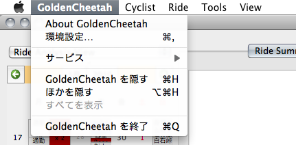
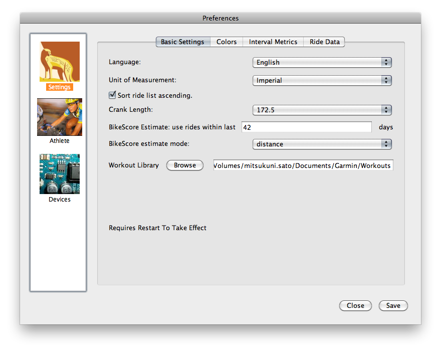
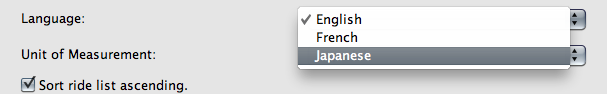
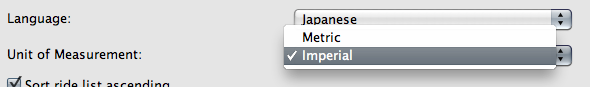
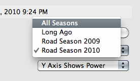

設定¶
言語と計測単位の設定¶
GoldenCheetahは様々な国で利用することを想定しており、英語、フランス語、日本語がサポートされています。また、計測単位としてヤード・ポンド法、メーター法が利用可能です。
GoldenCheetahを日本語、メーター法で使用するには環境設定ダイアログを開きます。
環境設定画面の Basic Settings タブには言語の設定項目( Language )と単位の設定項目( Unit of Measurement )があります。
Language のプルダウンメニューを開くと、English, French, Japaneseの項目があります。Japaneseを選択してください。
次に、 Unit of Measurement のプルダウンを開いてください。ImperialとMetricという2つの項目があります。メーター法を利用するにはMetricを選択します。
ダイアログの右下にある Save をクリックして設定を保存し、次に Close をクリックして環境設定ダイアログを終了します。GoldenCheetahを終了し、再度起動します。
パワーゾーンの設定¶
If you look back at the screenshot above, you may notice that there are several things shown in the “Ride Summary” tab that aren’t on your version. The picture above shows a non-zero “Bike Score”, and there’s a list of how much time the cyclist spent in each “Power Zone” during the ride as well.
BikeScore(TM) is a measure of the physiological stress you underwent during a ride. It was developed by Dr. Philip Skiba, and you can read more about it in an article he wrote.
For GoldenCheetah to compute your BikeScore and the time spent in each power zone, you first need to tell it what your power zones and critical power are. You can define your power zones however you like, maybe using the ones defined by Joe Friel, for example. Your critical power should be the maximum power you can sustain over an hour. Some people call this your “lactate threshold” or “functional threshold power”. Our friend Bill says a rose by any other name would smell as sweet.
There are currently three ways to set up your power zones. Each method has its benefits, so feel free to select the method that best suits your needs.
Method 1: Set via critical power plot.
GoldenCheetah can determine a value for your CP value based on all of the data in your critical power plot. The calculated value of CP can be used to create a new range in your power.zones file by clicking the “save CP value” button in the lower right corner of the critical power plot tab. The new range will use the default zone definitions (see Method 2). Once the new range is set, you can manually edit the file to change the zone definitions as in Method 3.
Method 2: User preferences.
From the menu bar select GoldenCheetah->Preferences, then click on “cyclist info”. The window should look like this:
Enter a value for critical power at the top of the dialog and click save to set your CP. New ranges can also be set via this dialog so that you can adjust your CP value throughout the season as your fitness increases (or decreases). Once your CP is set, GoldenCheetah will set up seven power zones based on percentages of your CP value. The zones are:
Zone Description Low High Z1 Active Recovery 0% 55% Z2 Endurance 55% 75% Z3 Tempo 75% 90% Z4 Threshold 90% 105% Z5 VO2 Max 105% 120% Z6 Anaerobic 120% 150% Z1 Neuromuscular 150% MAX If you want to use other zones boundaries or labels, you can manually edit the power.zones file as described in Method 3.
Method 3: Manually edit the power.zones file.
To edit/create the power.zones file you’ll need to use a text editor. On Linux, that probably means nano, vi, or emacs. On Mac, the easiest editor to use is TextEdit, which is in your Applications folder.
Start by downloading this sample file and saving it in your rider directory, which is listed in the GoldenCheetah->About GoldenCheetah menu item.
Open the power.zones file in a text editor and you’ll see this:
From BEGIN until 2006/07/17, CP=297:
1, Active Recovery, 122, 167
2, Endurance, 167, 228
3, Tempo, 228, 274
4, Lactate Threshold, 274, 319
5, VO2 Max, 319, 365
6, Anaerobic Capacity, 365, 678
7, Sprinting, 678, MAX
From 2006/07/17 until 2007/02/05, CP=329:
1, Active Recovery, 135, 185
2, Endurance, 185, 253
3, Tempo, 253, 303
4, Lactate Threshold, 303, 354
5, VO2 Max, 354, 404
6, Anaerobic Capacity, 404, 752
7, Sprinting, 752, MAX
From 2007/02/05 until END, CP=347:
1, Active Recovery, 139, 191
2, Endurance, 191, 260
3, Tempo, 260, 312
4, Lactate Threshold, 312, 364
5, VO2 Max, 364, 416
6, Anaerobic Capacity, 416, 774
7, Sprinting, 774, MAX
The format of the file is simple. You define a range of time, starting with a date or “BEGIN” to indicate the oldest possible time and ending with a date or “END” to indicate the latest possible time. Then you put your critical power (CP) for that date range. Then you list your zones, where each zone has a number, a name, a minimum power value, and a maximum power value. You can have as many time ranges and zones as you like. Most people enter a new time range every time their critical power goes up–right after a fitness test, for example.
NOTE: By default, Mac OS’s TextEdit will try and save the power.zones file with a .txt extension. Use the menu command “Format->Make Plain Text” to get it to let you save the file with a .zones extension instead.
シーズンファイル¶
一定期間のパフォーマンスを切り分けるには、シーズンファイル(seasons.xml)を作成する必要があります。 シーズンファイルはライドデータと同じディレクトリに新規作成し、次のフォーマットで記述します。:
<?xml version="1.0"?>
<seasons>
<season>
<name>Long Ago</name>
<startdate>2005-01-01</startdate>
<enddate>2009-05-01</enddate>
</season>
<season>
<name>Road Season 2010</name>
<startdate>2009-12-01</startdate>
<enddate>2010-10-01</enddate>
</season>
</seasons>
startdateからenddateまでが一つのシーズンとして定義され、 Cirtical Power Plot のウィンドウで切り替えることができます。
シーズンを追加するには<season>〜</season>までを追記します。:
<?xml version="1.0"?>
<seasons>
<season>
<name>Long Ago</name>
<startdate>2005-01-01</startdate>
<enddate>2009-05-01</enddate>
</season>
<season>
<name>Road Season 2010</name>
<startdate>2009-12-01</startdate>
<enddate>2010-10-01</enddate>
</season>
<season> <!-- cut here -->
<name>Road Season 2011</name>
<startdate>2010-11-15</startdate>
<enddate>2011-10-01</enddate>
</season> <!-- cut here -->
</seasons>
MacOSX上で日本語入力を行う¶
標準の設定ではGoldenCheetahのトレーニングノートに日本語を入力することが出来ません（正しくは、日本語を入力しても消えてしまいます）。 これはMacOSX版のQt4の問題で、MacOSXを適切に設定することで解決することが出来ます。
アプリケーション>ユーティリティからターミナルを開き、以下のようにタイプします。:
mkdir ~/.MacOSX
cd ~/.MacOSX
cat >> environment.plist
ターミナル上に次の設定ファイルをコピー＆ペーストしてください。:
<?xml version="1.0" encoding="UTF-8" ?>
<!DOCTYPE plist PUBLIC "-//Apple Computer//DTD PLIST 1.0//EN" "http://www.apple.com/DTDs/PropertyList-1.0.dtd">
<plist version="1.0">
<dict>
<key>LANG</key>
<string>ja_JP.UTF-8</string>
<key>PATH</key>
<string>/opt/local/bin:/opt/local/sbin/:/usr/local/bin:/usr/local/sbin:/usr/bin:/usr/sbin:/bin:/sbin</string>
</dict>
</plist>
最後にControlキーとDを同時に押してコマンドプロンプトに戻ってから、ターミナルを終了してください。